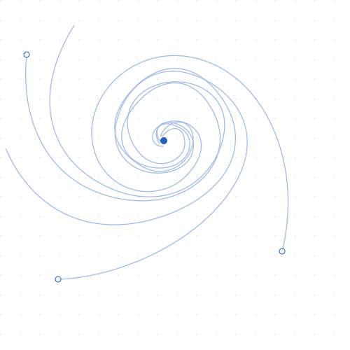
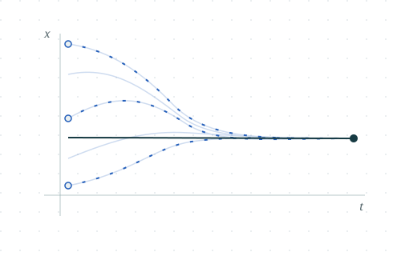

2026
Contraction : théorie et applications au contrôle des systèmes non linéaires
Techniques de l’ingénieur · Automatique et ingénierie système · s7173 · In French · Article
Control theory · Research · Teaching
Associate Professor (Maître de conférences)
CRAN · Université de Lorraine · ENSEM
I study nonlinear dynamical systems and develop tools to understand their behaviour and design their control.


01 / Latest updates
My article “Contraction : théorie et applications au contrôle des systèmes non linéaires” is published in Techniques de l’ingénieur (in French).
I will serve as Associate Editor for the American Control Conference 2027.
Research visit to Hiroshima University, Japan, with Y. Kawano.
Technical Associate Editor, Systems and Signals — Networked Systems, for the IFAC World Congress 2026.
Associate Editor for the European Control Conference 2026.
Associate Editor for the 27th International Symposium on Mathematical Theory of Networks and Systems (MTNS).
I became pedagogical director of the “Numerical Systems” master’s programme at ENSEM, Université de Lorraine.
NOLCOS in Reykjavík, Iceland: presentation on integral control for systems with multiple equilibria via 2-contraction.
“Low-gain integral control for average set-point tracking”, with P. Lorenzetti, R. Postoyan and D. Nešić, accepted at NOLCOS.
“PI-control for nonlinear systems with multiple equilibria via 2-contraction”, with P. Lorenzetti, D. Astolfi and V. Andrieu, accepted at NOLCOS.
CDC in Milan: two invited sessions on contraction theory, organized with G. Russo, D. Astolfi and F. Bullo.
“Linear output regulation of discrete-time networked systems subject to stochastic packet drops”, with V. S. Varma and D. Astolfi, accepted at CDC.
“Some LMIs for the design of dynamic output feedback contractive controllers for a class of nonlinear systems”, with M. Jungers and S. Tarbouriech, accepted at MICNON.
“Singularly perturbed k-contractive linear systems”, with P. Lorenzetti, I. C. Morarescu and R. Postoyan, accepted in IEEE Control Systems Letters.
“Synchronization in Networks of Nonlinear Systems: Contraction Analysis via Riemannian Metrics and Deep-Learning for Feedback Estimation”, with S. Zoboli, D. Astolfi, V. Andrieu and G. Casadei, accepted in IEEE Transactions on Automatic Control.
“Incremental stabilization of cascade nonlinear systems and harmonic regulation: a forwarding-based design”, with D. Astolfi, V. Andrieu and L. Marconi, accepted in IEEE Transactions on Automatic Control.
02 / Selected work
Techniques de l’ingénieur · Automatique et ingénierie système · s7173 · In French · Article
13th IFAC Symposium on Nonlinear Control Systems (NOLCOS) · Conference
IEEE Transactions on Automatic Control · Article
03 / Research interests
My research brings together nonlinear systems, contraction theory, output regulation and multi-agent systems.
Research & student supervision
Contraction · An illustrationConversations & collaborations